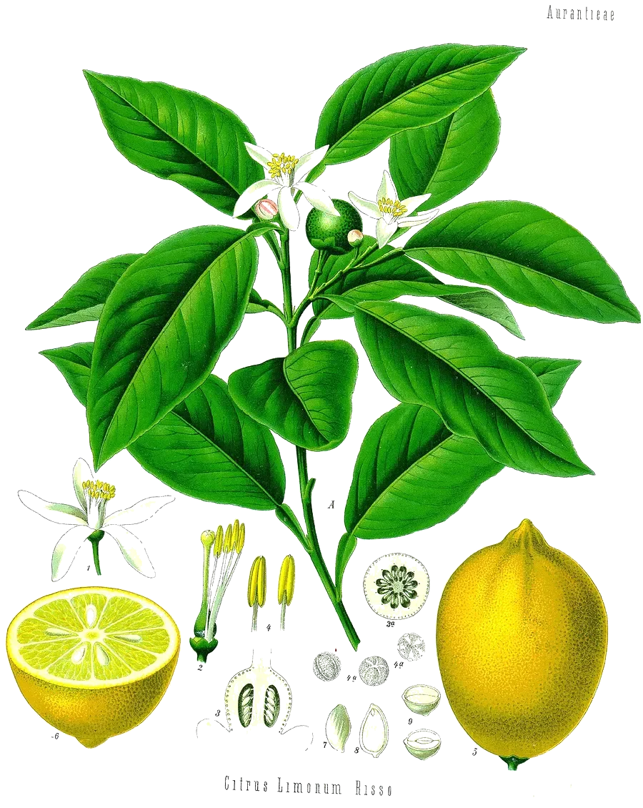

After the lemon, Citrus limon. One six-membered ring with a tail. The molecule exists in two mirror-image forms; citrus peel makes almost only this one.
- Scent
- bright, citrus, fresh, lightly sweet Reference description: “citrus odor” (HSDB)
- Found in
- lemon, orange, grapefruit and lime peel, juniper berries, peppermint, rosemary, fennel, dill, caraway and celery seed.
- In High Forest
- Sunshine Soothing Berry as a flavouring ingredient; amount not published
- Molar mass
- 136.23 g/mol
- Boiling point
- 175–177 °C JECFA
- CAS number
- 5989-27-5
- FEMA number
- 2633
- Record
- PubChem 440917
- Systematic name
- (4R)-1-methyl-4-prop-1-en-2-ylcyclohexene D-limonene, the (R)-(+) form of citrus peel
What has been studied highest rung: people, small
- PeoplePeople absorb it. A 1998 dose-finding study gave patients with advanced cancer 0.5 to 12 g per square metre of body surface a day by mouth and followed it through the blood.9
- PeopleIn a 2013 pilot study, women with early-stage breast cancer took 2 g a day for two to six weeks; limonene collected in breast tissue.10
- PeopleIn a 2024 laboratory study of 20 adults, vaporized limonene on its own (1 or 5 mg) could not be told from placebo. Inhaled at 15 mg together with 30 mg of THC, it reduced the anxiety THC caused.11
- Not knownWhether the small amounts used to flavour food do anything beyond flavour. The studies in which people swallowed it used grams.